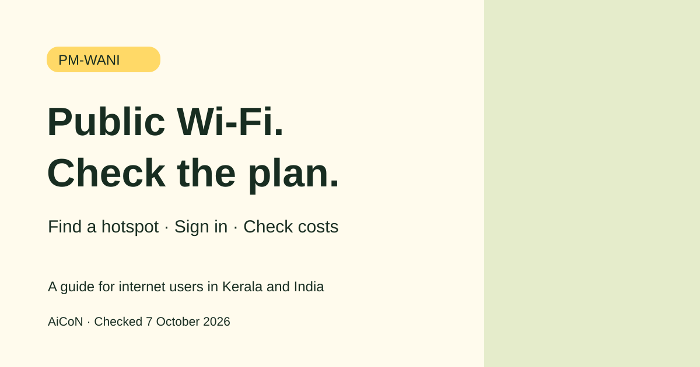

PM-WANI Public Wi-Fi: How to Connect and Check Costs
PM-WANI is a framework for public Wi-Fi in India. It can help you get internet at a participating hotspot. It does not mean free internet everywhere. Check the location, plan and price before paying.

Explainer by AiCoN - not a government publication
What is PM-WANI?
PM-WANI stands for Prime Minister's Wi-Fi Access Network Interface. It is a government framework that lets providers offer broadband through public Wi-Fi hotspots. A hotspot is a place where you can connect your phone or other supported device to a local Wi-Fi network.
The official Central Registry describes four roles. Public Data Offices (PDOs) run the Wi-Fi access points. Public Data Office Aggregators (PDOAs) handle services such as authorisation and accounting. App Providers help users register, find hotspots and sign in. C-DOT maintains the Central Registry.
Who can use it in Kerala and India?
This guide is for internet users, not businesses applying to operate a hotspot. You need access to a participating hotspot, a supported device and the provider's sign-in process. You must follow the provider's terms. There is no promise that a hotspot exists near every home, college or village in Kerala.
This is not a cash benefit or a scholarship. If you explore other government support, access subject to each scheme's eligibility. A provider's registration rules are different from the steps a consumer follows to use Wi-Fi.
How to connect, step by step
- Start at the official PM-WANI Central Registry. Check its Hotspot Map and App Links options for the available networks and apps. Availability depends on your location.
- Use the relevant provider app where required. The official consumer guidance describes registering and authenticating through an app. Follow the current instructions for the hotspot you choose.
- At a participating hotspot, look at the available networks in the app and choose the correct one. Check with the hotspot operator if you are unsure which network belongs to them.
- Read the plan details before paying. Check the price, data allowance and validity shown by the provider. Do not assume every hotspot has the same plan.
- The official guidance describes payment online or through a voucher. Use the method offered by your provider and keep the receipt or confirmation.
- Connect and use the service within the plan's limits. The official page says use continues until the balance is exhausted. Follow the provider's current instructions for any time limit or reconnection.
The registry also lists newer notices on QR-based authentication and short-duration plans. This guide does not assume the app route is the only option at every hotspot. Use the current instructions displayed by the chosen provider.
Is PM-WANI free?
Not automatically. The official consumer page describes choosing a network and paying an amount. The price and plan shown by the provider are what matter for your purchase. We have not tested or priced a particular hotspot.
The registry says certain provider roles do not pay government registration or licence fees. That is a business rule. It does not make a customer's Wi-Fi plan free. Nor does it remove hardware, broadband or setup costs for someone running a hotspot.
Deadlines and practical limits
The official consumer pages checked for this guide do not list a closing date for ordinary Wi-Fi use. This is an ongoing service framework, not a limited-time offer.
Coverage, speed, signal and plan availability depend on the hotspot and provider. Check before relying on it for an exam, interview or important call. No specific Kerala hotspot was checked for this article.
Safety and payment checks
Use links from the official registry instead of installing an app sent by an unknown person. Confirm the network name and price before paying. Do not share passwords or one-time codes with another person. Keep your device updated and sign out of services when you are done.
For people considering a hotspot business, the registry's alert says the framework does not provide a government grant or subsidy. It advises checking the aggregator's credentials and getting invoices and payment receipts. Do not confuse a sales pitch with an official grant.
Frequently asked questions
Can I use it anywhere in Kerala?
Only where a participating hotspot is available and you meet the provider's device and sign-in requirements. This guide does not claim statewide coverage.
Is it unlimited free internet?
No. Check the provider's actual price, data and validity. The official guidance describes paid access.
Do I have to become a PDO to use it?
No. A PDO operates a hotspot. A consumer uses the provider's sign-in and plan process.
Which app should I install?
Check the App Links section of the official registry and the instructions for your chosen hotspot. This guide does not endorse a specific private app.
Can a hotspot owner get a guaranteed government subsidy?
No such guarantee is supported. The current registry alert says the framework does not envisage a government grant or subsidy.
Official sources
PM-WANI Central Registry and National Portal of India consumer guidance. Checked 7 October 2026.